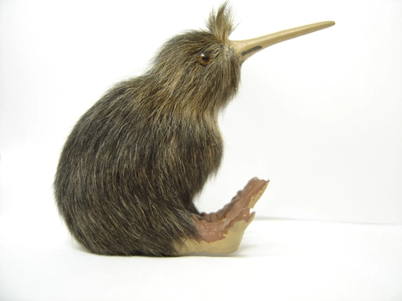
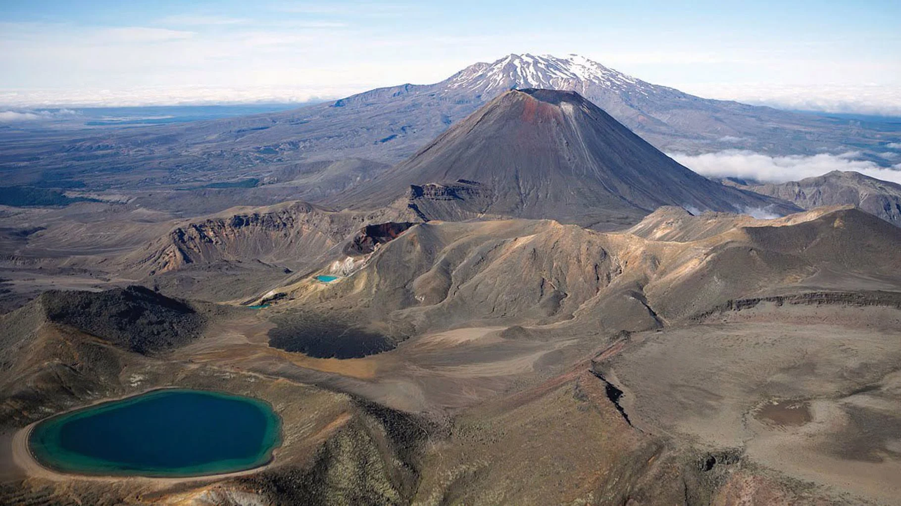

Mount Cook - The tallest peak in New Zealand
Mount Cook, also known as Aoraki, is the highest mountain in New Zealand, standing at 3,724 meters. It is located in the Southern Alps on the South Island. This stunning peak is popular for hiking, mountaineering, and scenic flights. The Aoraki/Mount Cook National Park is also home to glaciers, alpine lakes, and amazing stargazing. Visitors can explore walking trails like the Hooker Valley Track or stay in the nearby village of Mount Cook.

Kiwi Bird - A famous symbol of New Zealand
The Kiwi bird is a unique and flightless bird found only in New Zealand. It is a national symbol and very special to New Zealanders, who are often called "Kiwis" themselves. Kiwis are shy, nocturnal birds with long beaks and brown feathers. They live in forests and are hard to see in the wild, but you can visit special wildlife parks to learn about and see them up close. Popular places to see Kiwis include the Kiwi Birdlife Park in Queenstown, the National Kiwi Hatchery in Rotorua, and Zealandia in Wellington.
Tongariro National Park - A World Heritage Gem
Tongariro National Park, located on the North Island of New Zealand, is one of the country’s most famous natural areas. It’s a UNESCO World Heritage site, known for its striking volcanic landscapes, including Mount Ruapehu, Mount Ngauruhoe, and Mount Tongariro. The park offers scenic hiking trails, including the famous Tongariro Alpine Crossing, a 19.4 km journey that takes hikers across volcanic craters, emerald lakes, and steaming vents. The park is also a popular spot for skiing, snowboarding, and experiencing the dramatic geothermal activity of the region.
Queenstown - Adventure capital of New Zealand
Queenstown is a town in the South Island of New Zealand, located on the shores of Lake Wakatipu and surrounded by the Southern Alps. It's known as the adventure capital of the country. Visitors can enjoy exciting activities like bungee jumping, skydiving, jet boating, and skiing in winter. Queenstown also offers beautiful hiking trails, lake cruises, and great restaurants with amazing views.